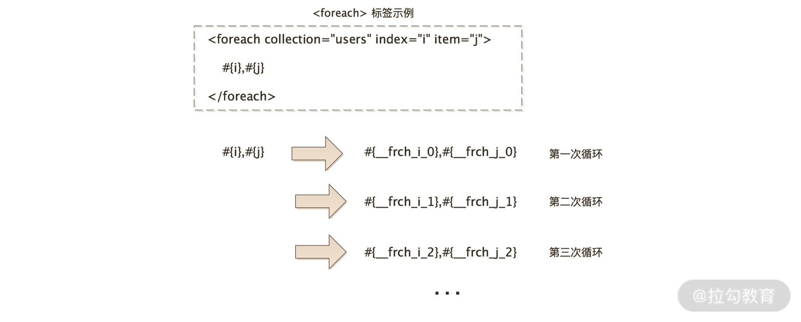
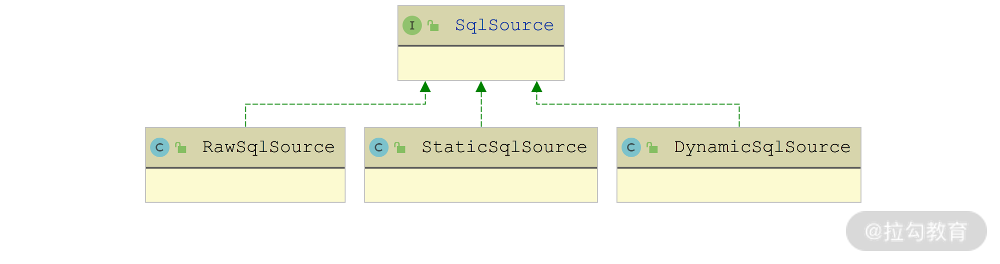

- 00 开篇词 领略 MyBatis 设计思维，突破持久化技术瓶颈.md.html
- 01 常见持久层框架赏析，到底是什么让你选择 MyBatis？.md.html
- 02 订单系统持久层示例分析，20 分钟带你快速上手 MyBatis.md.html
- 03 MyBatis 源码环境搭建及整体架构解析.md.html
- 04 MyBatis 反射工具箱：带你领略不一样的反射设计思路.md.html
- 05 数据库类型体系与 Java 类型体系之间的“爱恨情仇”.md.html
- 06 日志框架千千万，MyBatis 都能兼容的秘密是什么？.md.html
- 07 深入数据源和事务，把握持久化框架的两个关键命脉.md.html
- 08 Mapper 文件与 Java 接口的优雅映射之道.md.html
- 09 基于 MyBatis 缓存分析装饰器模式的最佳实践.md.html
- 10 鸟瞰 MyBatis 初始化，把握 MyBatis 启动流程脉络（上）.md.html
- 11 鸟瞰 MyBatis 初始化，把握 MyBatis 启动流程脉络（下）.md.html
- 12 深入分析动态 SQL 语句解析全流程（上）.md.html
- 13 深入分析动态 SQL 语句解析全流程（下）.md.html
- 14 探究 MyBatis 结果集映射机制背后的秘密（上）.md.html
- 15 探究 MyBatis 结果集映射机制背后的秘密（下）.md.html
- 16 StatementHandler：参数绑定、SQL 执行和结果映射的奠基者.md.html
- 17 Executor 才是执行 SQL 语句的幕后推手（上）.md.html
- 18 Executor 才是执行 SQL 语句的幕后推手（下）.md.html
- 19 深入 MyBatis 内核与业务逻辑的桥梁——接口层.md.html
- 20 插件体系让 MyBatis 世界更加精彩.md.html
- 21 深挖 MyBatis 与 Spring 集成底层原理.md.html
- 22 基于 MyBatis 的衍生框架一览.md.html
- 23 结束语 会使用只能默默“搬砖”，懂原理才能快速晋升.md.html
- 捐赠
13 深入分析动态 SQL 语句解析全流程（下）
在上一讲，我们讲解了 MyBatis 中动态 SQL 语句的相关内容，重点介绍了 MyBatis 使用到的 OGNL 表达式、组合模式、DynamicContext 上下文以及多个动态 SQL 标签对应的 SqlNode 实现。今天我们就紧接着上一讲，继续介绍剩余 SqlNode 实现以及 SqlSource 的相关内容。
SqlNode 剩余实现类
在上一讲我们已经介绍了 StaticTextSqlNode、MixedSqlNode、TextSqlNode、IfSqlNode、TrimSqlNode 这几个 SqlNode 的实现，下面我们再把剩下的三个 SqlNode 实现类也说明下。
1. ForeachSqlNode
在动态 SQL 语句中，我们可以使用 <foreach> 标签的抽象。
下面我们就来分析一下 ForeachSqlNode 的 apply() 方法是如何实现循环的。
首先，向 DynamicContext.sqlBuilder 中追加 open 属性值指定的字符串，然后通过 ExpressionEvaluator 工具类解析 <foreach> 标签中 collection 属性指定的表达式，得到一个集合对象，并遍历这个集合。
接下来，为每个元素创建一个 PrefixedContext 对象。PrefixedContext 是 DynamicContext 的一个装饰器，其中记录了一个 prefix 前缀信息（其实就是 <foreach> 标签中的 separator 属性值），在其 apply() 方法中会先追加 prefix 前缀（迭代第一个元素的时候，prefix 为空字符串），然后追加 SQL 片段。
如果传入的集合是 Map 类型，则通过 applyIndex() 方法和 applyItem() 方法将 Map 中的 Key 和 Value 记录到 PrefixedContext 中，示例如下：
private void applyIndex(DynamicContext context, Object o, int i) {
if (index != null) {
// Key值与index属性值指定的变量名称绑定
context.bind(index, o);
// Key值还会与"__frch_"+index属性值+ "_" + i 这个变量绑定
// 这里传入的 i 是一个自增序列，由底层的 DynamicContext 统一维护。
context.bind(itemizeItem(index, i), o);
}
}
private void applyItem(DynamicContext context, Object o, int i) {
if (item != null) {
// Value值与item属性值指定的变量名称绑定
context.bind(item, o);
// Value值还会与"__frch_"+item属性值+ "_" + i 这个变量绑定
context.bind(itemizeItem(item, i), o);
}
}
但如果传入的集合不是 Map 类型，则通过 applyIndex() 方法和 applyItem() 方法将集合元素的下标索引和元素值本身绑定到 PrefixedContext 中。
完成 PrefixedContext 的绑定之后，会调用 <foreach> 标签下子 SqlNode 的 apply() 方法，其中传入的 DynamicContext 实际上是 ForEachSqlNode$FilteredDynamicContext 这个内部类，它也是 DynamicContext 的装饰器，核心功能是：根据前面在 PrefixedContext 中绑定的各种变量，处理 SQL 片段中的“#{}”占位符。FilteredDynamicContext 在多次循环中的处理效果如下图所示：

FilteredDynamicContext 变化过程示意图
下面是 FilteredDynamicContext.appendSql() 方法的核心实现：
public void appendSql(String sql) {
// 创建识别"#{}"的GenericTokenParser解析器
GenericTokenParser parser = new GenericTokenParser("#{", "}", content -> {
// 这个TokenHandler实现会将#{i}替换成#{__frch_i_0}、#{__frch_i_1}...
String newContent = content.replaceFirst("^\\s*" + item + "(?![^.,:\\s])", itemizeItem(item, index));
if (itemIndex != null && newContent.equals(content)) {
// 这里会将#{j}替换成#{__frch_j_0}、#{__frch_j_1}...
newContent = content.replaceFirst("^\\s*" + itemIndex + "(?![^.,:\\s])", itemizeItem(itemIndex, index));
}
return "#{" + newContent + "}";
});
// 保存解析后的SQL片段
delegate.appendSql(parser.parse(sql));
}
完成集合中全部元素的迭代处理之后，ForeachSqlNode.apply() 方法还会调用 applyClose() 方法追加 close 属性指定的后缀。最后，从 DynamicContext 上下文中删除 index 属性值和 item 属性值指定的变量。
2. ChooseSqlNode
在有的业务场景中，可能会碰到非常多的分支判断，在 Java 中，我们可以通过 switch…case…default 的方式来编写这段代码；在 MyBatis 的动态 SQL 语句中，我们可以使用 <choose>、<when> 和 <otherwise> 三个标签来实现类似的效果。
IfSqlNode 和 MixedSqlNode 的核心实现在上一讲中我们已经分析过了，这里不再重复。ChooseSqlNode 的实现也比较简单，其中维护了一个 List<SqlNode> 集合（ifSqlNodes 字段）用来记录所有 <when> 子标签对应的 IfSqlNode 对象，同时还维护了一个 SqlNode 类型字段（defaultSqlNode 字段）用来记录 <otherwise> 子标签生成的 MixedSqlNode 对象，该字段可以为 null。
在 ChooseSqlNode 的 apply() 方法中，首先会尝试迭代全部 IfSqlNode 节点并执行 apply() 方法，我们知道任意一个 IfSqlNode.apply() 方法返回 true，即表示命中该分支，此时整个 ChooseSqlNode.apply() 返回 true，否则尝试执行 defaultSqlNode.apply() 方法并返回 true，即进入默认分支。如果 defaultSqlNode 字段为 null，则返回 false。
3. VarDeclSqlNode
VarDeclSqlNode 抽象了 <bind> 标签，其核心功能是将一个 OGNL 表达式的值绑定到一个指定的变量名上，并记录到 DynamicContext 上下文中。
VarDeclSqlNode 中的 name 字段维护了 <bind> 标签中 name 属性的值，expression 字段记录了 <bind> 标签中 value 属性的值（一般是一个 OGNL 表达式）。
在 apply() 方法中，VarDeclSqlNode 首先会通过 OGNL 工具类解析 expression 这个表达式的值，然后将解析结果与 name 字段的值一起绑定到 DynamicContext 上下文中，这样后面就可以通过 name 字段值获取这个表达式的值了。
SqlSourceBuilder
动态 SQL 语句经过上述 SqlNode 的解析之后，接着会由 SqlSourceBuilder 进行下一步处理。
SqlSourceBuilder 的核心操作主要有两个：
- 解析“#{}”占位符中携带的各种属性，例如，“#{id, javaType=int, jdbcType=NUMERIC, typeHandler=MyTypeHandler}”这个占位符，指定了 javaType、jdbcType、typeHandler 等配置；
- 将 SQL 语句中的“#{}”占位符替换成“?”占位符，替换之后的 SQL 语句就可以提交给数据库进行编译了。
SqlSourceBuilder 的入口是 parse() 方法，这里首先会创建一个识别“#{}”占位符的 GenericTokenParser 解析器，当识别到“#{}”占位符的时候，就由 ParameterMappingTokenHandler 这个 TokenHandler 实现完成上述两个核心步骤。
ParameterMappingTokenHandler 中维护了一个 List<ParameterMapping> 类型的集合（parameterMappings 字段），用来记录每个占位符参数解析后的结果，ParameterMapping 记录了占位符名称（property 字段）、jdbcType 属性值（jdbcType 字段）、javaType 属性值（javaType 字段）、typeHandler 属性值（typeHandler 字段）等。
在 buildParameterMapping() 方法中会通过 ParameterExpression 工具类解析“#{}”占位符，然后通过 ParameterMapping.Builder 创建对应的 ParameterMapping 对象。这里得到的 ParameterMapping 就会被记录到 parameterMappings 集合中。
ParameterMappingTokenHandler.handleToken() 方法的核心逻辑如下：
public String handleToken(String content) {
// content是前面通过GenericTokenParser识别到的#{}占位符，
// 这里通过buildParameterMapping()方法进行解析，得到ParameterMapping对象
parameterMappings.add(buildParameterMapping(content));
// 直接返回"?"占位符，替换原有的#{}占位符
return "?";
}
SqlSourceBuilder 完成了“#{}”占位符的解析和替换之后，会将最终的 SQL 语句以及得到的 ParameterMapping 集合封装成一个 StaticSqlSource 对象并返回。
SqlSource
经过上述一系列处理之后，SQL 语句最终会由 SqlSource 进行最后的处理。
在 SqlSource 接口中只定义了一个 getBoundSql() 方法，它控制着动态 SQL 语句解析的整个流程，它会根据从 Mapper.xml 映射文件（或注解）解析到的 SQL 语句以及执行 SQL 时传入的实参，返回一条可执行的 SQL。
下图展示了 SqlSource 接口的核心实现：

SqlSource 接口继承图
下面我们简单介绍一下这三个核心实现类的具体含义。
- DynamicSqlSource：当 SQL 语句中包含动态 SQL 的时候，会使用 DynamicSqlSource 对象。
- RawSqlSource：当 SQL 语句中只包含静态 SQL 的时候，会使用 RawSqlSource 对象。
- StaticSqlSource：DynamicSqlSource 和 RawSqlSource 经过一系列解析之后，会得到最终可提交到数据库的 SQL 语句，这个时候就可以通过 StaticSqlSource 进行封装了。
1. DynamicSqlSource
DynamicSqlSource 作为最常用的 SqlSource 实现，主要负责解析动态 SQL 语句。
DynamicSqlSource 中维护了一个 SqlNode 类型的字段（rootSqlNode 字段），用于记录整个 SqlNode 树形结构的根节点。在 DynamicSqlSource 的 getBoundSql() 方法实现中，会使用前面介绍的 SqlNode、SqlSourceBuilder 等组件，完成动态 SQL 语句以及“#{}”占位符的解析，具体的实现如下：
public BoundSql getBoundSql(Object parameterObject) {
// 创建DynamicContext对象，parameterObject是用户传入的实参
DynamicContext context = new DynamicContext(configuration, parameterObject);
// 调用rootSqlNode.apply()方法，完成整个树形结构中全部SqlNode对象对SQL片段的解析
// 这里无须关心rootSqlNode这棵树中到底有多少SqlNode对象，每个SqlNode对象的行为都是一致的，
// 都会将解析之后的SQL语句片段追加到DynamicContext中，形成最终的、完整的SQL语句
// 这是使用组合设计模式的好处
rootSqlNode.apply(context);
// 通过SqlSourceBuilder解析"#{}"占位符中的属性，并将SQL语句中的"#{}"占位符替换成"?"占位符
SqlSourceBuilder sqlSourceParser = new SqlSourceBuilder(configuration);
Class<?> parameterType = parameterObject == null ? Object.class : parameterObject.getClass();
SqlSource sqlSource = sqlSourceParser.parse(context.getSql(), parameterType, context.getBindings());
// 创建BoundSql对象
BoundSql boundSql = sqlSource.getBoundSql(parameterObject);
context.getBindings().forEach(boundSql::setAdditionalParameter);
return boundSql;
}
这里最终返回的 BoundSql 对象，包含了解析之后的 SQL 语句（sql 字段）、每个“#{}”占位符的属性信息（parameterMappings 字段 ，List<ParameterMapping> 类型）、实参信息（parameterObject 字段）以及 DynamicContext 中记录的 KV 信息（additionalParameters 集合，Map<String, Object> 类型）。
后面在讲解 StatementHandler、Executor 如何执行 SQL 语句的时候，我们还会继续介绍 BoundSql 的相关内容，到时候你可以跟这里联系起来学习。
2. RawSqlSource
接下来我们看 SqlSource 的第二个实现—— RawSqlSource，它与 DynamicSqlSource 有两个不同之处：
- RawSqlSource 处理的是非动态 SQL 语句，DynamicSqlSource 处理的是动态 SQL 语句；
- RawSqlSource 解析 SQL 语句的时机是在初始化流程中，而 DynamicSqlSource 解析动态 SQL 的时机是在程序运行过程中，也就是运行时解析。
这里我们需要先来回顾一下前面介绍的 XMLScriptBuilder.parseDynamicTags() 方法，其中会判断一个 SQL 片段是否为动态 SQL，判断的标准是：如果这个 SQL 片段包含了未解析的“${}”占位符或动态 SQL 标签，则为动态 SQL 语句。但注意，如果是只包含了“#{}”占位符，也不是动态 SQL。
XMLScriptBuilder. parseScriptNode() 方法而 会判断整个 SQL 语句是否为动态 SQL，判断的依据是：如果 SQL 语句中包含任意一个动态 SQL 片段，那么整个 SQL 即为动态 SQL 语句。
总结来说，对于动态 SQL 语句，MyBatis 会创建 DynamicSqlSource 对象进行处理，而对于非动态 SQL 语句，则会创建 RawSqlSource 对象进行处理。
RawSqlSource 在构造方法中，会调用 SqlNode.apply() 方法将 SQL 片段组装成完整 SQL，然后通过 SqlSourceBuilder 处理“#{}”占位符，得到 StaticSqlSource 对象。这两步处理与 DynamicSqlSource 完全一样，只不过执行的时机是在 RawSqlSource 对象的初始化过程中（即 MyBatis 框架初始化流程中），而不是在 getBoundSql() 方法被调用时（即运行时）。
最后，RawSqlSource.getBoundSql() 方法实现是直接调用 StaticSqlSource.getBoundSql() 方法返回一个 BoundSql 对象。
通过前面的介绍我们知道，无论是 DynamicSqlSource 还是 RawSqlSource，底层都依赖 SqlSourceBuilder 解析之后得到的 StaticSqlSource 对象。StaticSqlSource 中维护了解析之后的 SQL 语句以及“#{}”占位符的属性信息（List<ParameterMapping> 集合），其 getBoundSql() 方法是真正创建 BoundSql 对象的地方，这个 BoundSql 对象包含了上述 StaticSqlSource 的两个字段以及实参的信息。
总结
我们紧接上一讲的内容，往后介绍了 SqlNode 接口剩余的实现类，其中包括 ForeachSqlNode、ChooseSqlNode 等，这些 SqlNode 实现类都对应我们常用的动态 SQL 标签。
接下来，我们还介绍了 SqlSourceBuilder 以及 SqlSource 接口的内容，其中针对不同类型的 SQL 语句，MyBatis 抽象出了不同的 SqlSource 实现类，也就是文中介绍的 DynamicSqlSource、RawSqlSource 以及 StaticSqlSource。
© 2019 - 2023 Liangliang Lee. Powered by gin and hexo-theme-book.